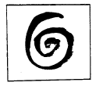
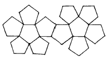
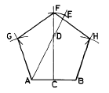
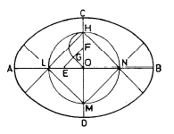
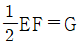

도자기공예기능사 (2001-10-14 기출문제)
1과목: 임의 구분
1. 물레성형에 쓰이는 도구 중 곰방대(고대)의 용도는?
- 큰 접시의 바깥 모양
- 입이 좁은 화병을 만드는데
- 찻잔을 만드는데
- 작은 접시 안바닥을 만드는데
(정답률: 97%)

2. 다음 금속 안료 중 두가지 모두 청색을 발색 할 수 있는 것은?
- 동, 코발트
- 코발트, 크롬
- 니켈, 안티몬
- 동, 크롬
(정답률: 78%)
3. 다음 중 지거링(Jiggering) 방법으로 성형하기에 가장 적합한 형태는?
- 접시
- 주전자
- 투각 항아리
- 매병
(정답률: 79%)
4. 가스가마를 사용할 때 사용자의 안전을 위해 가장 우선적으로 확인할 사항은?
- 가마내 불길이 제대로 순환이 되는가 여부
- 버너의 위치, 공기흡입구의 개폐 여부 확인
- 압력계의 작동 및 가스유출 여부 확인
- 붕판, 지주, 열전대 등의 유무 확인
(정답률: 92%)
5. 다음 중 잘못 짝지워진 것은?
- 해교제 – TiO2
- 응교제 - MgCl2
- 윤활제 – Lado유
- 광화제 - 형석
(정답률: 82%)
6. 단위 도안에 관한 설명 중 가장 올바른 것은?
- 도안화 하기 이전의 작업을 말한다.
- 도안을 구성하는 전체 요소를 말한다.
- 연속도안의 기본이 되는 도안이다.
- 자유무늬의 일부분이다.
(정답률: 80%)
7. 석고틀에 의한 성형기법 중 원형제작 방법과 관계가 없는 것은?
- 원형의 크기는 완성품의 크기와 같게 만들어야 한다.
- 여러가지 측정도구를 사용하여 정확한 형태로 깎아 다듬질 한다.
- 소석고를 물에 혼합하여 교반한 다음 형태를 만들 수 있는 석고 덩어리를 만든다.
- 다듬질한 석고 원형의 앞, 뒷면에 도면에 의하여 조각을 한다.
(정답률: 97%)
8. 다음 그림과 같은 소용돌이 선에서 얻을 수 있는 가장 큰 느낌은?

- 부드러움
- 고상함
- 점잖음
- 불명료
(정답률: 86%)
9. 다음 그림과 같은 전개도는?

- 정 6각형
- 정 12면체
- 정 10면체
- 정 6면체
(정답률: 93%)
10. 평행 투시도는 소점이 몇 개 인가?
- 1소점
- 2소점
- 3소점
- 4소점
(정답률: 82%)
11. 다음 중 감산혼합이 아닌 것은?
- 빨강 + 파랑 = 보라
- 빨강 + 녹색 = 노랑
- 빨강 + 노랑 = 주황
- 노랑 + 파랑 = 녹색
(정답률: 71%)
12. 1변이 주어진 정5각형 작도 그림에서 DE의 길이는?

- AD/2
- AD/3
- AB/2
- CF/4
(정답률: 82%)
13. 도자유약에서 실리카와 알루미나를 결합시키는 것은 어떤 효과를 얻기 위해서 인가?
- 용융점을 낮게 해주기 위해
- 유리질을 형성케 하기 위해
- 충격에 잘 견딜 수 있게 하기 위해
- 발색효과를 높여 주기 위해
(정답률: 65%)
14. 다음 중 공예디자인의 직접 조건에 속하는 것은?
- 시대성
- 민족성
- 유행성
- 기능성
(정답률: 86%)
15. 소성용 기계 기구에 대한 설명 중 잘못된 것은?
- 제겔콘의 SK번호는 높을 수록 온도가 높다.
- 옵티컬 파이로미터(optical pyrometer)는 간접적으로 온도를 측정하는 것이다.
- 복사고온계는 열전대가 따로 필요하다.
- 유압식 분무 버너는 연소 속도가 빠른 잇점이 있다.
(정답률: 75%)
16. 카올린(kaolin)족 광물이 아닌 것은?
- 핼로이사이트(Halloysite)
- 내크라이트(Nacrite)
- 디카이트(Dickite)
- 아라고나이트(Aragonite)
(정답률: 79%)
17. 다음 배색 중 채도차가 가장 큰 것은?
- 빨강, 회색
- 녹색, 노랑
- 파랑, 자주
- 주황, 연두
(정답률: 90%)
18. 장축과 단축이 주어진 타원 그리기에서 작도의 조건이 아닌 것은?


- FH = OF
- AE = CO
- OE = OF
(정답률: 65%)
19. 해칭선은 어떤선을 사용하는가?
- 굵은 실선
- 가는 실선
- 가는 일점쇄선
- 굵은 일점쇄선
(정답률: 88%)
20. 수비의 설명 중 올바른 것은?
- 바람에 의한 점토채집 방법
- 물을 이용하여 고운 점토 알갱이를 얻는 방법
- 기계를 이용하여 고운 점토 알갱이를 얻는 방법
- 약품처리를 하여 채집하는 방법
(정답률: 95%)
2과목: 임의 구분
21. 다음 중 가소성 점토가 아닌 것은?
- 목절점토
- 와목점토
- 볼 클레이
- 규조토
(정답률: 84%)
22. 도자기 소성시에 기물(器物)이 내화판(耐火板)에 붙지 않도록 하기 위하여 사용하는 것은?
- 녹말 가루
- 장석 가루
- 알루미나
- 가성 소다
(정답률: 76%)
23. 빨강과 노랑의 수채화 물감을 혼합한 결과는?
- 명도, 채도가 높아진다.
- 명도, 채도가 낮아진다.
- 채도는 낮아지나 명도는 높아진다.
- 명도는 낮아지나 채도는 변함없다.
(정답률: 64%)
24. 다음 중 아르누보 양식의 특징은?
- 유동적인 곡선
- 연한 색채
- 단순한 직선
- 온화한 색채
(정답률: 87%)
25. 다음 유약 시유 방법 중 대형 도자기나 타일 등에 시유할 때 주로 이용되는 방법은?
- 담금법
- 체적법
- 솔질법
- 분무법
(정답률: 83%)
26. 틀 제작 시 기공이 없는 석고형을 만들기 위해서 사용하는 기계는?
- 진공석고 교반기
- 진공 컴퓨터 펌프
- 진공 토련기
- 진공트렌스
(정답률: 95%)
27. 낙랑문화의 특징과 대표적인 것은?
- 선가신앙, 유교사상이 표현된 채화칠협
- 굽이 높은 고배형의 토기
- 섬세한 입사무늬의 동경
- 누금세공법에 의한 순금공예
(정답률: 72%)
28. 다음 중 청자의 요지가 아닌 곳은?
- 충남 대덕
- 전북 부안
- 경북 봉화
- 전남 강진
(정답률: 71%)
29. 참구이의 과정을 3단계로 구분 할 때, 불꽃의 순서는?
- 산화→중성→환원
- 산화→환원→중성
- 환원→산화→중성
- 환원→중성→산화
(정답률: 75%)
30. 다음 중 본구이(본소성)할 때 필요치 않는 것은?
- 석고
- 지주
- 내화판
- 가스
(정답률: 97%)
31. 사용목적에 따른 원료의 분류에서 장석은 어디에 속하는가?
- 점토질 원료
- 규산질 원료
- 융제 원료
- 석회질 원료
(정답률: 83%)
32. 색의 3속성 중 무채색에 없는 것은?
- 채도,색상
- 채도,명도
- 명도,색상
- 명도,채도,색상
(정답률: 83%)
33. 플린트(flint)와 산화 코발트를 하소하여 만든 발색원료의 색상은?
- 적색
- 황색
- 청색
- 녹색
(정답률: 90%)
34. 전통적으로 우리나라에서 사용하던 재래식 물레는?
- 금속주물사용 물레
- 목재로 돌림판과 물레판을 만든 물레
- 전동기 사용 물레
- 돌을 다듬어 돌림판과 물레판을 만든 물레
(정답률: 99%)
35. 다음 공예제도에 관한 설명 중 틀린 것은?
- 도면은 될 수 있는대로 간단명료 하게 그리는 것이 좋다.
- 외형선은 굵은 실선으로 표시 하여야 한다.
- 치수는 모두 ㎝의 단위를 사용하는 것이 원칙이다.
- 치수는 반드시 실제의 치수를 기입하여야 한다.
(정답률: 90%)
36. 도안에서 율동감을 얻기 위한 방법 중 가장 타당한 것은?
- 색이나 선을 반복하여야 한다.
- 균제적인 균형을 주어야 한다.
- 일부분을 특히 강조한다.
- 공간 설정을 조화있게 하여야 한다.
(정답률: 86%)
37. 기계물레로 가압하여 만들 때 질흙에 석고형 안쪽에서 물을 한 두방울 떨어뜨려 주는 이유는?
- 기물의 안쪽을 곱게 정리하려고
- 질흙의 수분을 조절하기 위하여
- 석고형을 오래 보존하려고
- 기계물레가 잘 돌아가기 위하여
(정답률: 79%)
38. 도자기 소성에 관한 설명 중 틀린 것은?
- 초벌구이의 온도는 태토안의 점토분 함량에 따라 조절해야 한다.
- 초벌구이는 가능한 완전연소로 하고 초기에는 공기의 유통을 원활하게 해야 한다.
- 초벌구이시 수증기의 빠른 증발을 위해 초기에 온도를 급상승시킨다.
- 재벌구이시 유약이 녹기 시작하는 900℃이상이 되면 온도를 서서히 상승시킨다.
(정답률: 94%)
39. 칼륨 장석에 대한 설명 중 잘못된 것은?
- 정장석 이라고도 한다.
- 용융온도는 1220℃ 정도이다.
- 도자기의 가소성원료로 사용된다.
- 화학식은 K2O.Al2O3.6SiO2 이다.
(정답률: 64%)
40. 색의 진출, 후퇴감에 대한 설명 중 잘못된 것은?
- 난색계는 한색계 보다 진출성이 있다.
- 명도가 높은 색은 팽창성이 있고 낮은 색은 수축성이 있다.
- 채도가 높은 것에 비하여 낮은 것이 진출성이 있다.
- 배경색과 명도차가 큰 밝은 색은 진출성이 있다.
(정답률: 85%)
3과목: 임의 구분
41. 다음 중 무수 규산 알루미나질 원료가 아닌 것은?
- 홍주석
- 남정석
- 규회석
- 규선석
(정답률: 56%)
42. 가스, 중유, 전기가마로 구분하는 것은?
- 소성작업에 의한 분류
- 소성목적에 의한 분류
- 구조 및 형상에 의한 분류
- 사용연료에 의한 분류
(정답률: 97%)
43. 제조 작업시 안전수칙과 거리가 먼 것은?
- 주유시 기계정지, 전동기 기계류 정기점검, 위험원인 제거
- 기계 기구 도구의 보존, 고장시 즉시 수리, 불안전 공구 사용금지
- 기계 벨트 등의 안전카바 설치
- 원료의 혼입방지, 파기재생시 이물혼입 방지책
(정답률: 83%)
44. 다음 중 유약의 결점인 것은?
- 크로울링
- 테라코타
- 브리스톨유
- 유백현상
(정답률: 71%)
45. 신석기 시대의 대표적인 유물은?
- 빗살무늬토기
- 무문토기
- 다뉴세문경
- 고인돌
(정답률: 91%)
46. 그릇을 성형할 때 주로 흙타래를 만들어 성형하는 그릇의 종류는?
- 옹기류
- 백자류
- 분청류
- 사기류
(정답률: 98%)
47. 무운·스펜서 조화론에서 20색상환 중 어떤 하나의 색을 기준으로 할 때 조화 되는 색상차는?
- 색상차 1
- 색상차 2
- 색상차 3
- 색상차 4
(정답률: 79%)
48. 대체로 명쾌한 성격을 가지고 있는 것이 특징인 형태는?
- 유기적 형태
- 우연적 형태
- 불규칙 형태
- 기하학적 형태
(정답률: 76%)
49. 다음 중 도자기 제작과정에서 가장 경계하여야 할 중요한 사항은?
- 먼지의 분산
- 오염된 공기
- 철분의 혼입
- 습기의 침투
(정답률: 87%)
50. 청동기시대 팔령구는 어떤 목적의 기구로 사용되었는가?
- 종교
- 전쟁
- 수렵
- 예술
(정답률: 86%)
51. 석회를 함유하고 있지 않은 원료는?
- 백운석
- 소석회
- 형석
- 활석
(정답률: 62%)
52. 다음 중 심리적으로 또는 시각적으로 가장 안정감을 주는 색채는?
- 녹색
- 파랑
- 흰색
- 빨강
(정답률: 97%)
53. 제도에 사용되는 문자의 설명 중 올바른 것은?
- 문자는 명조체로 쓴다.
- 문자의 크기는 폭을 기준으로 한다.
- 문자는 수직 또는 15°오른쪽 경사로 쓰는 것을 원칙으로 한다.
- 숫자는 로마 숫자를 원칙으로 한다.
(정답률: 75%)
54. 도침의 설명 중 맞는 것은?
- 소성온도를 알아보는 삼각추이다.
- 도자기를 올려 놓고 굽는 받침대이다.
- 도자기로 만든 삼각추이다.
- 내화갑을 받치는 받침대이다.
(정답률: 74%)
55. 다음 중 가장 따뜻한 느낌을 주는 배색은?
- 파랑과 노랑
- 빨강과 파랑
- 노랑과 빨강
- 황록과 파랑
(정답률: 96%)
56. 상감법에 대한 설명 중 올바른 것은?
- 음각을 해서 파진 부분을 색다른 소지로 메꾼다.
- 색다른 소지를 전면에 바르고 양각한후 나머지를 긁어낸다.
- 안료로 채화하고 나머지 부분을 긁어낸다.
- 모체와 다른 색소지를 써서 원하는대로 묻혀나간다.
(정답률: 92%)
57. 다음 중 가소성(可塑性)원료가 아닌 것은?
- 카올린
- 납석
- 도석
- 장석
(정답률: 57%)
58. 다음 중 응교제가 아닌 것은?
- 염화칼슘
- 황산알루미늄
- 염화마그네슘
- 인산나트륨
(정답률: 70%)
59. 휘발유약을 입히기 위해 소금을 투입하는 적정 온도는?
- 500∼600℃
- 600∼650℃
- 700∼750℃
- 850∼900℃
(정답률: 79%)
60. 다음 중 점토의 종류가 아닌 것은?(오류 신고가 접수된 문제입니다. 반드시 정답과 해설을 확인하시기 바랍니다.)
- 와목
- 목절
- 석기
- 도석
(정답률: 54%)